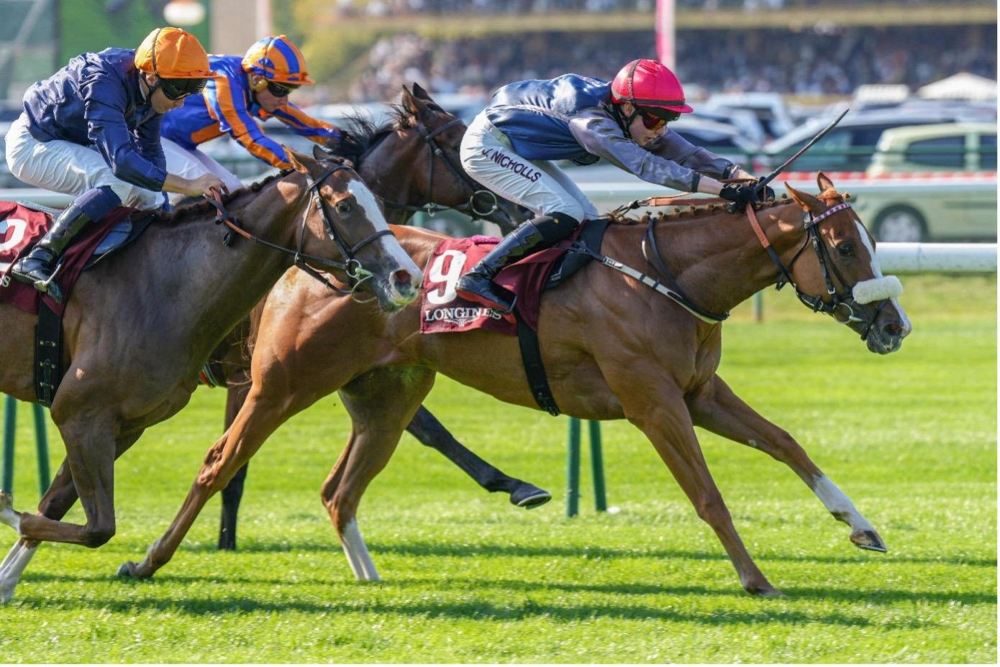

Miss Yechance, inscrita a última hora, da a Jack Nicholls su primer Grupo 1 en el Abbaye
Miss Yechance no figuraba en las inscripciones del Prix de l'Abbaye de Longchamp. Sus propietarios pagaron 25.200 euros para suplementarla y la potranca de tres años lo devolvió el domingo con la victoria en el Grupo 1 de velocidad del fin de semana del Arc.

Miss Yechance no figuraba en las inscripciones del Prix de l'Abbaye de Longchamp. Sus propietarios pagaron 25.200 euros para suplementarla y la potranca de tres años lo devolvió el domingo con la victoria en el Grupo 1 de velocidad del fin de semana del Arc.
Salió rápida de los cajones, se colocó delante y aguantó en los 1.000 metros de ParisLongchamp, que cubrió en 55,08 s. Partía a 8-1. Shiri, de Francis-Henri Graffard y con Mickael Barzalona, fue segunda, y Mission Central, de Aidan O'Brien con Ryan Moore, tercera.
En la silla iba Jack Nicholls, aprendiz de 20 años, que logró así su primer Grupo 1. La carrera tiene historia en su familia: su abuelo, David Nicholls, la ganó como preparador en 2002, y su padre, Adrian, también la corrió en sus inicios como jockey.
Para Karl Burke, que prepara en Coverham (Yorkshire), es su primer Abbaye. La potranca corre con los colores del libio Al Leith Racing Club. «Es absolutamente fantástico. Miss Yechance tiene muchísima velocidad. Es una gran victoria para Libia», declaró el preparador, que no descarta llevarla a la Breeders' Cup Turf Sprint.
Fichas: Jack (caballo)
— Redacción de Galope al Día